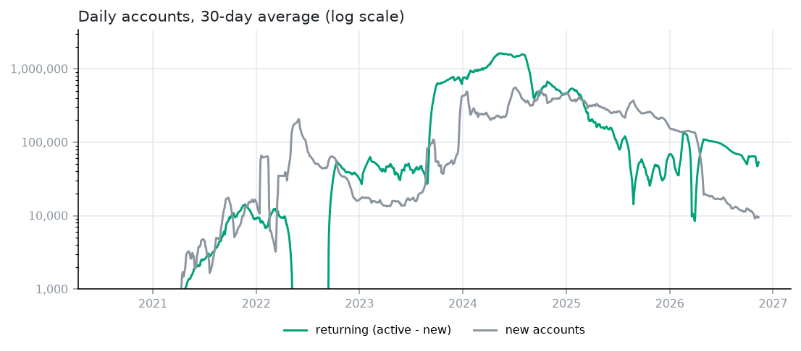
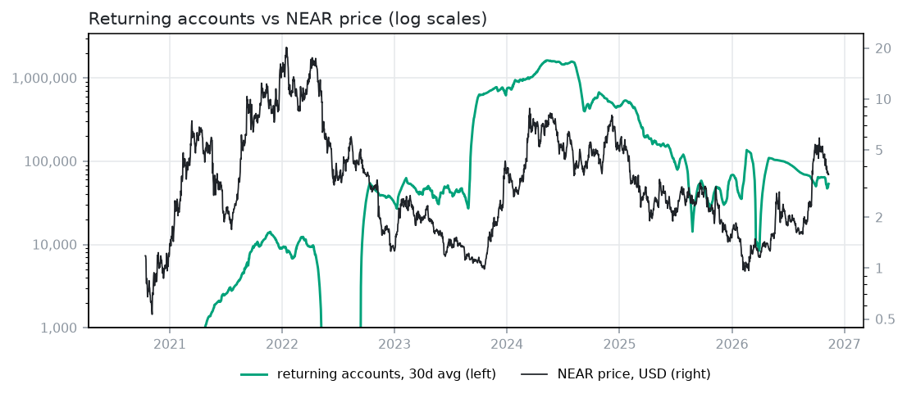
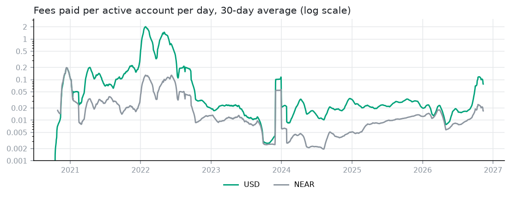
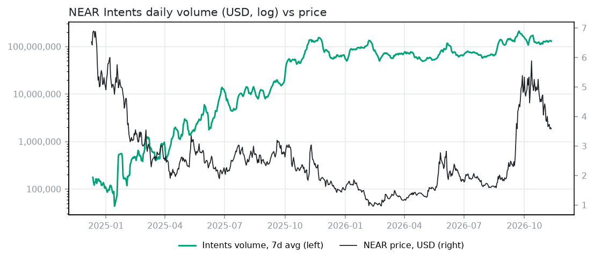

NEAR Real Usage
Data 2020-07-21 → 2026-11-11 (2305 days). Rebuilt by python -m thesis build. Thesis: see THESIS.md in the repo.
New vs returning accounts
Over the last 90 days returning accounts averaged 60,746/day (+37% vs a year earlier), new accounts 10,946/day (-96%). By medians returning accounts changed +11%.

Method: returning_accounts = active_accounts - new_accounts (NearBlocks daily charts), 30-day rolling mean. This is a lower bound: new accounts that did not transact on their first day are subtracted anyway. New accounts exceeded active accounts (returning clipped to 0) on 0 of the last 90 days, 7 of the 90 days a year earlier and 234 days in all history (mostly mid-2022, shown as a gap).
Usage vs price
Price changed +39% year-on-year (90-day averages) while returning accounts changed +37%.

Method: Same 90-day window compared with the window 365 days earlier.
Transactions per active account
Each active account sent 11.2 transactions a day on average in the last 90 days (-30% YoY); a rising value with flat accounts points to automated activity.

Method: txns / active_accounts (NearBlocks), 30-day rolling mean.
Fees per active account
An active account paid $0.066 a day in fees over the last 90 days (+120% YoY in USD, +43% in NEAR terms, +53% by USD medians); total fees were $4,122/day (-52% YoY).

Method: txn_fee_usd / active_accounts (NearBlocks), 30-day rolling mean; NEAR terms = the same divided by the daily price.
NEAR Intents volume
Intents volume averaged $134,939,215/day over the last 90 days (+223% YoY).

Method: DefiLlama dexs/near-intents totalDataChart, 7-day rolling mean.
Does usage lead price?
Weekly-change correlation with price, lags outside the noise band (9 of 85 tested; about 4 expected by chance): returning accounts: nothing outside the noise band; active accounts: -5 wk r=+0.12, +0 wk r=+0.14; intents volume: nothing outside the noise band; fees: -1 wk r=+0.18, +0 wk r=+0.38, +1 wk r=+0.18; txns: -8 wk r=+0.14, +2 wk r=-0.13, +4 wk r=+0.11, +6 wk r=-0.15.

Method: corr(Δlog metric_t, Δlog price_{t+k}), k in weeks, positive k = metric moves first (green bars); dotted lines = ±2/√n noise band.
Sources
Raw responses are committed in data/raw/; summary numbers in docs/summary.json.